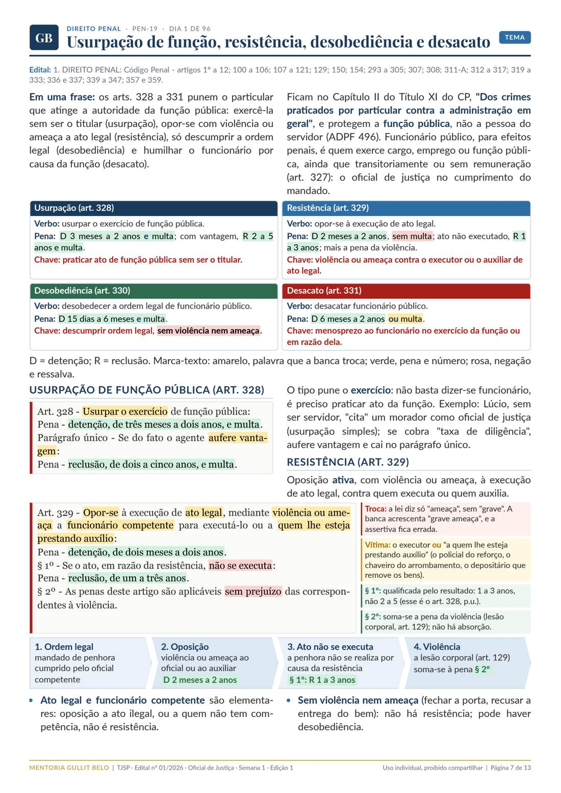
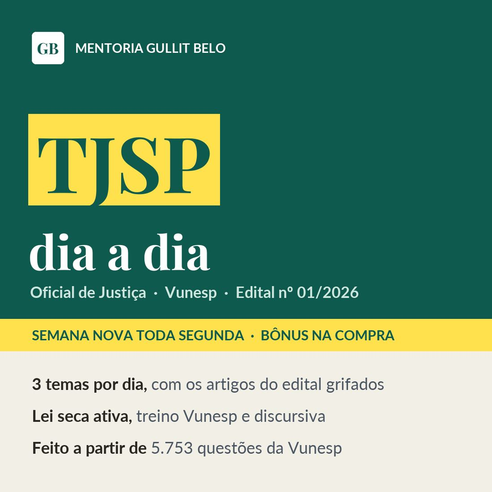

TJSP dia a dia
Oficial de Justiça
O edital pede o programa artigo por artigo, e a Vunesp derruba o candidato trocando uma palavra da lei. Analisei 5.753 questões da banca e as 10 provas do TJSP de Oficial e Escrevente, e montei um estudo de cerca de duas horas por dia com cada artigo grifado no ponto que a banca troca.
Gullit Belo

R$ 147 até 10/12, último dia de inscrição. Depois, R$ 247.
Prova prevista para 14 de março de 2027: 70 questões objetivas e 2 discursivas no mesmo dia.
De segunda a sábado, domingo livre · semana nova toda segunda
Bônus para os 10 primeiros compradores: cronograma personalizado (restam 10)
Por dentro
Páginas reais do Dia 1. Toque para ampliar.
Das 70 questões, 40 são de conhecimentos específicos, e o edital lista os artigos de cada lei. Cada dia traz três temas do edital com o artigo inteiro e o marca-texto onde a banca costuma trocar a palavra.
O que a Vunesp repete
Saíram da mesma análise das 5.753 questões.
E ainda: Inteligência Vunesp, Guia da prova, cartões de revisão de cada semana e o Premonitório, no fim de fevereiro.
Oficial de Justiça, dia a dia até a prova
Cerca de duas horas por dia, de segunda a sábado. Domingo é descanso.

- Três temas por dia com os artigos do edital grifados
- Lei seca ativa, treino no padrão Vunesp, discursiva e recuperação ativa todo dia
- Semana nova toda segunda, em PDF
- Artigos que a Vunesp mais cobra e Iscas da Vunesp · bônus
- Inteligência Vunesp e Guia da prova · bônus
- Cartões de revisão de cada semana · bônus
- Premonitório no fim de fevereiro · bônus
- Cronograma personalizado para os 10 primeiros compradores · bônus
até 10/12, fim das inscrições. Depois, R$ 247.
Um PDF por semana · semana nova toda segunda · Premonitório no fim de fevereiro
Comece pelo Dia 1
Escrevi o material para quem trabalha e tem umas duas horas por dia. Leia o Dia 1 inteiro e veja se o jeito de estudar serve para você.
Gullit Belo · @mentoriagb
Aprovado em concursos de tribunais, MP e AGU. Hoje sou servidor no TRT.